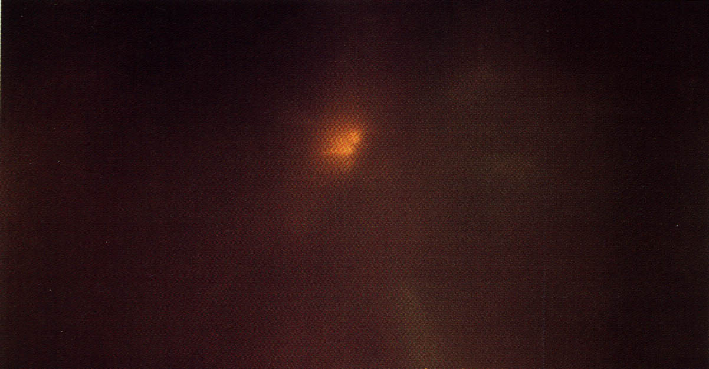

Le journal de TF1 parle de l'observation de la veille, film amateur à l'appui.
Plusieurs témoins dans plusieurs départements du sud-ouest observent une boule
de feu orangée qui se désintégrer sans bruit avec émission de fumée Sans l'ampleur de la rentrée de la veille, il s'agit vraisemblablement là d'une autre rentrée atmosphériqueSEPRA: PAN classé B.
La lumière nocturne observée à Montréal le 7

Le phénomène ci-contre apparaît à Montreal (Canada) et reste visible pendant
avant de s'estomper derrière un épais rideau de nuages. Il est notamment observé par la police
canadienne. Il sera expliqué par des reflets d'éclairages (d'une piscine notamment) sur des cristaux de glace
Haines, Richard F. & Gunette, Bernard: "Details Surrounding a Large Stationary Aerial Object Above Montreal", publication privée, 1992.Van Utrecht, Wim: "Large stationary object over Montreal", Caelestia, 2011-01Alessandri, R.: "L'ovni géant qui a stationné pendant trois heures au-dessus de Montréal !", Univers OVNI, 2016-12-13.
À l'émission 7/7, Alain Delon déclare ne pas
croire à l'explication de l'observation du par une rentrée atmosphérique.
Dans la région de Nantes, plusieurs témoins observent une dizaine de boules lumineuses se
déplaçant à grande vitesse L'enquête montrera qu'il s'agissait de rampes laser installées par EDF à l'occasion des festivités du 20ème anniversaire de la centrale de Cordennais. Ces laser étaient visibles à 40 kmSEPRA: PAN classé A.
En ville, par temps nuageux, des adolescents voient au zenith 2 phénomènes, qui finissent par disparaître
Témoignage GEPAN n° 1990307383 [PV 2209].
Par un ciel dégagé, des retraités voient au zenith vers le nord, cap sud, 2 phénomènes qui finissent par
disparaître Témoignage GEPAN n° 1990307384 [PV 655].
A Nort-sur-Erdre (Loire Atlantique), 1 femme accompagnée de 3
enfants et circulant en voiture sont "accompagnés" par 2 puis 3 formes allongées de couleur vert fluorescent. Ces
formes évaluées à 4 ou 5 m se déplaçent à environ 80 km/h, à la même vitesse que la voiture SEPRA: Cas de type D.